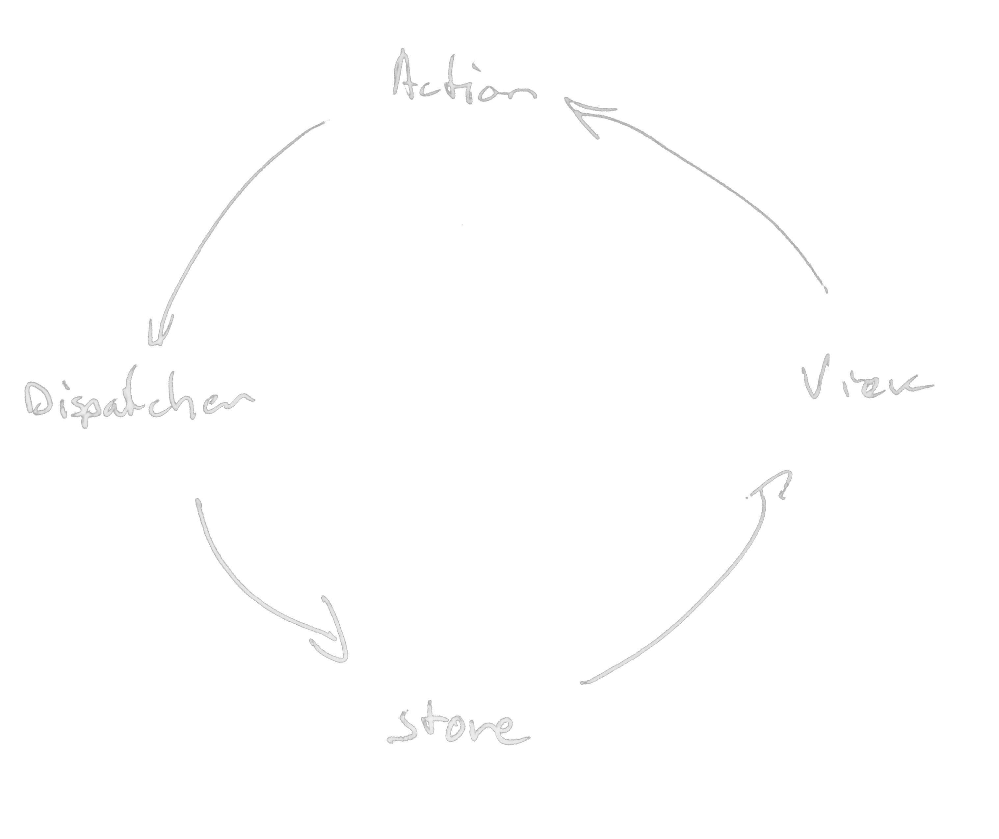
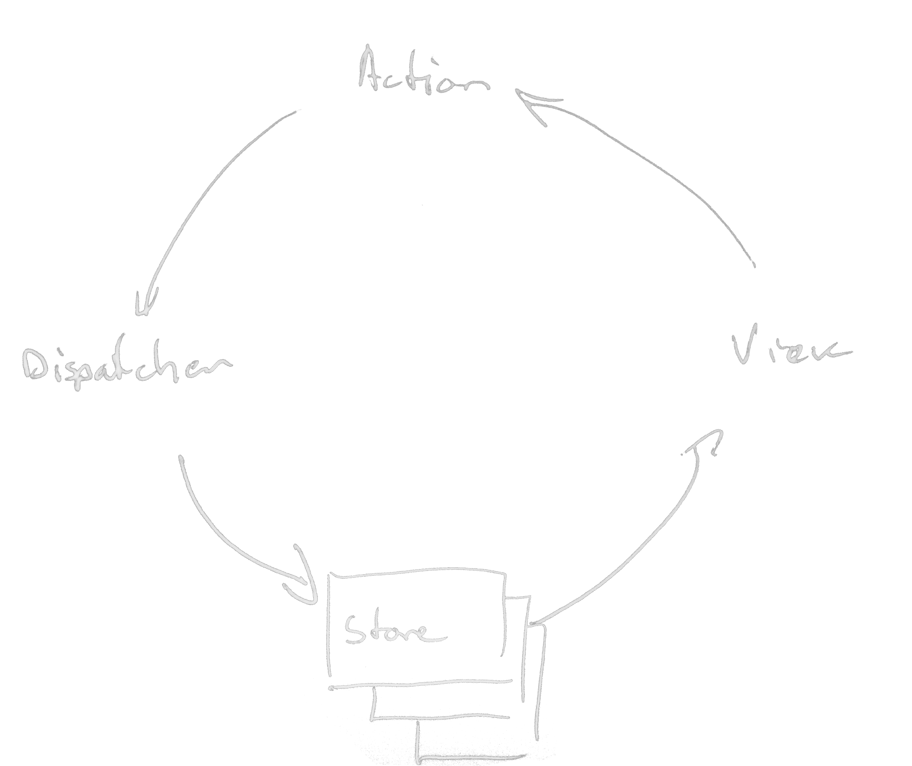
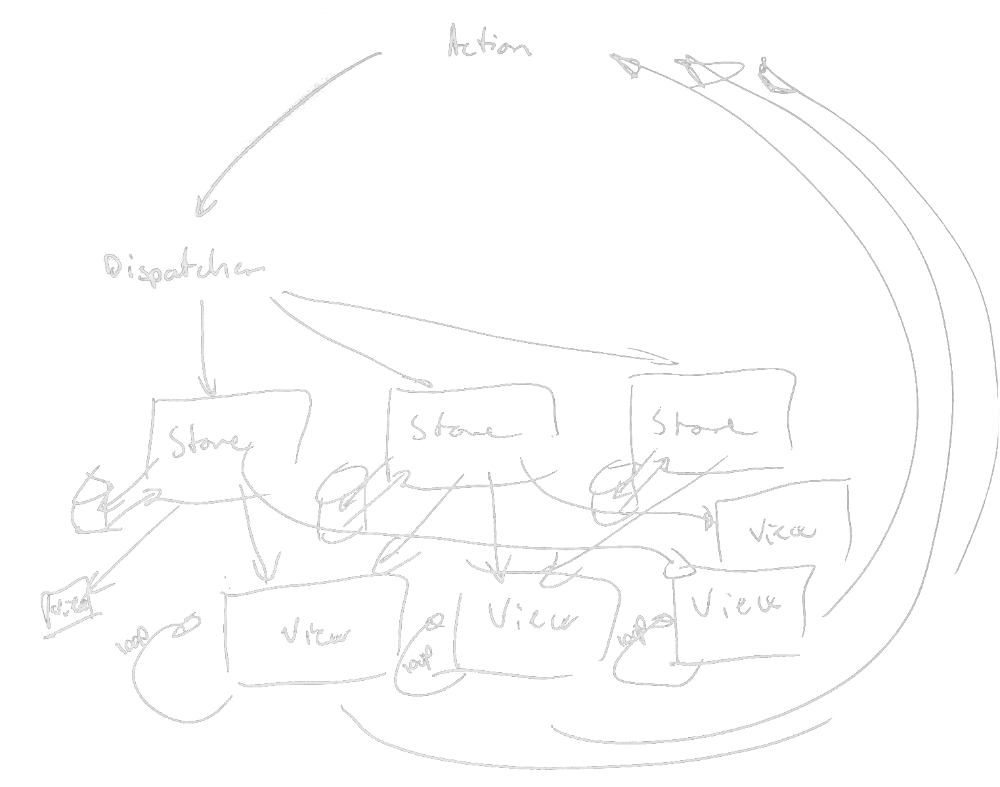

name: head class: center, middle, inverse --- name: center class: center, middle --- template: head # Red<span style="color: gray">ucer</span> # <span style="color: gray">Fl</span>ux ## Predictable state container ## [@torgeir](http://twitter.com/torgeir) --- template: head # Reducer ```js [1, 2, 3].reduce(function (sum, n) { return sum + n; }, 0); // (0) + 1 // (0 + 1) + 2 // (0 + 1 + 2) + 3 // => 6 ``` --- template: head # f (state, action) = updated state --- template: head  # Flux --- template: head  # Flux --- template: head  # Flux -- -- <img src="flux/4-1.jpg" style="bottom: 0em; left: 10em; position: absolute; height: 40%;"/> -- -- <img src="flux/4-3.jpg" style="transform:rotate(5deg); top: 25em; left: 0em; position: absolute; height: 30%;"/> --- template: head # 3 principles ## Single source of truth ## State is read-only ## Mutations through pure functions --- template: head # Single source of truth ```js import { createStore } from 'redux'; const store = createStore(slides); ``` --- template: head # Actions ```js const nextSlide = function () { return { type: "NEXT_SLIDE" }; }; store.dispatch(nextSlide()); ``` --- template: head # Mutations through pure-functions ```js function slides (state, action) { switch (action.type) { case "NEXT_SLIDE": return { slide: state.slide + 1 }; } return state; } ``` --- template: head # Mutations through pure-functions ```js const INIT_STATE = { slide: 0 }; function slides (state = INIT_STATE, action) { switch (action.type) { case "NEXT_SLIDE": return { slide: state.slide + 1 }; } return state; } ``` --- template: head # Read only state ```js store.subscribe(function () { const data = store.getState(); // { // slides: { slide: 1 } // } ``` ```html ReactDOM.render( <Application data={ data } />, el); }); ``` --- template: head # react-redux ```js const Slideshow = (props) => <span> Slide number: { props.slides.slide } <button onClick={ props.nextSlide }> Next slide</button> </span> ``` ```js const ConnectedSlides = Connect(state => state.slides, actions)(Slideshow) ``` ```html ReactDOM.render( <Provider store={ store }> <ConnectedSlides /> </Provider>, el) ``` --- template: head # Why is this a good idea? --- template: head # Sweet references ##[Omniscient Playground w/redux](http://goo.gl/yT6CIu) ##[Full-Stack Redux Tutorial](http://teropa.info/blog/2015/09/10/full-stack-redux-tutorial.html) ##[Videoer: Getting Started with Redux](https://egghead.io/series/getting-started-with-redux) ##[Redux in 100 lines](https://gist.github.com/gaearon/ffd88b0e4f00b22c3159) --- template: head # Thanks! ## [@torgeir](http://twitter.com/torgeir)